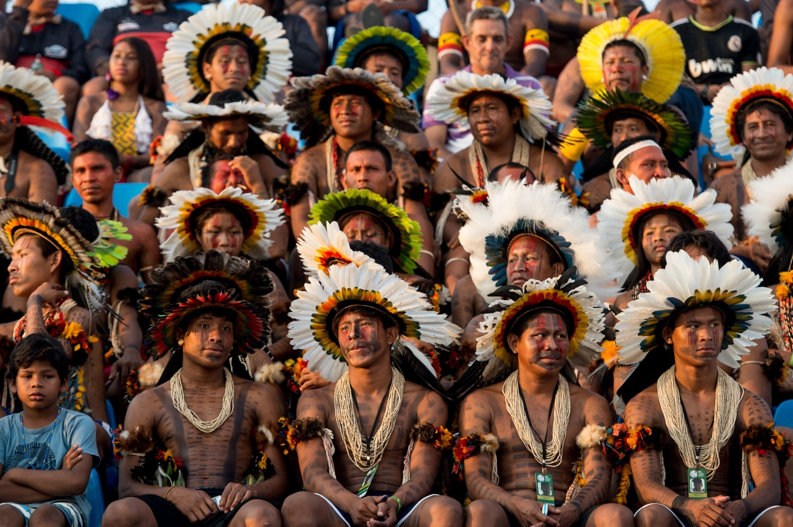
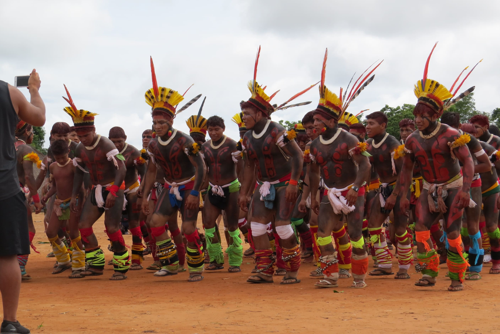
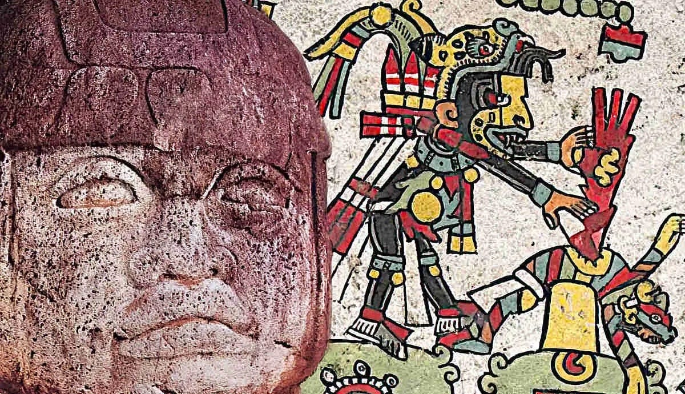

Apresentação do Blog

Bem-vindo ao nosso blog dedicado a contar um pouco sobre a "História, Ciência, Tecnologia e Inovação Indígena e
Ancestral". Aqui, veremos as ricas contribuições dos povos indígenas e ancestrais para o campo da Ciência, apresentando
uma narrativa muitas vezes ignorada, mas bastante importante. Ao avaliar a cultura desses povos, pudemos descobrir que
essas comunidades possuem diversos conhecimentos que cobrem não apenas a preservação ambiental e a sabedoria medicinal,
mas também inovações tecnológicas e concepções científicas únicas. Com esse conteúdo, esperamos inspirar diálogos
inclusivos, apresentando um outro lado da produção de Ciência, tecnologia e inovação e buscando um novo futuro para a
Ciência e inovação.
Fonte Imagem: noticias.bol.uol.com.br
O que é Ciência e como ela se desenvolveu no Ocidente e Oriente

A Ciência desempenha um papel fundamental na nossa sociedade, influenciando a maneira como interpretamos o mundo ao nosso redor; por meio da experimentação e observação, ela visa estudar e compreender o funcionamento do universo. Graças a Ciência, desvendamos os segredos da natureza, progredimos na área da medicina, desenvolvemos tecnologias inovadoras e compreendemos a complexidade do universo.
Para realizar tais feitos, muitas pessoas dedicaram suas vidas a essa prática, das quais podemos mencionar René Descartes – que é considerado um dos pais do método científico moderno, fundador da geometria analítica e conseguiu explicar conceitos da reflexão da luz -; Isaac Newton – contribuiu principalmente com a invenção do cálculo diferencial e integral, Lei da Gravitação Universal e as Leis de Newton-; e Charles Darwin – conhecido principalmente pela Teoria da Evolução por Seleção Natural.
Apesar da nossa educação voltar os holofotes mais para a Ciência desenvolvida no Ocidente, o Oriente também contribuiu muito para o avanço do conhecimento da nossa sociedade. As principais contribuições do Oriente para esse campo foram realizadas por: Mo Tzu - que desenvolveu estudos sobre astronomia, física e seria a primeira a pessoa a inventar a “câmera” -; Zhuangzi - Criou e documentou métodos científicos baseados na observação e na experiência pessoal -; Cai Lun - Inventou o papel, impactando toda a forma de disseminação de conhecimento.
Fonte Imagem: https://dominiorural.com/indigenas-floresta-em-pe/
Como o Ocidente se desenvolveu?
A compreensão sobre como o Ocidente se desenvolveu é a base para entender o padrão de progresso adotado como desejável por nós, sendo que esse é sinônimo de desenvolvimento econômico e tecnológico, que, por sua vez, são ditados pelas escolhas do Estado e da burguesia em relação à pesquisa e inovação, sempre buscando o lucro. Esse modus operandi ganhou força na primeira Revolução Industrial, quando a Inglaterra, com sua economia baseada no comércio marítimo e na exploração e tráfico de escravos nas suas colônias na América, Ásia e África, modificou seu sistema de produção do artesanato para, primeiramente, a manufatura e posteriormente para a maquinofatura. Esse terceiro sistema fez com que o investimento e pesquisa se voltassem para produção de máquinas para as fábricas, que surgiram naquela época, administradas pelos comerciantes e burgueses.
Conforme mostra a imagem da pirâmide do sistema capitalista, na sua base ficavam os proletariados (no caso, os ingleses mais pobres e os escravos vindos das colônias) que trabalhavam para sustentar a monarquia e a burguesia (mais acima nos degraus da pirâmide). Esses, por sua vez, ditavam quais setores deveriam ser favorecidos, por deterem principalmente os meios de produção, as instituições financeiras e o poder político.
Com esse novo sistema, os investimentos voltaram-se a novos materiais (ferro e aço) e novas fontes de energia (carvão e vapor), consequentemente modificando completamente as prioridades nas pesquisas e inovações da Inglaterra do século XVII. Essas passaram a focar em tecnologias que utilizassem as novas fontes de energia e novos materiais, além de infraestrutura para sua utilização. Logo, tanto comerciantes como o Estado se beneficiavam com esse novo rumo, por exemplo: o motor a vapor permitiu a inovação dos navios britânicos, beneficiando o avanço da marinha britânica, o que diretamente favorecia a manutenção da monarquia; enquanto que, pelo lado dos comerciantes, o lucro aumentava com o surgimento de fábricas e novas máquinas, além da exploração do proletariado.
Portanto, com o tempo, a visão de progresso dos países do Ocidente se consolidou como a busca pelo crescimento econômico e pelo lucro, que, seguindo essa lógica, começaram a nortear a pesquisa e o desenvolvimento nessas nações, a exemplo das mudanças ocorridas na Inglaterra. Setores considerados cruciais para o poder econômico e militar direcionaram o caminho da inovação, às custas da exploração do proletariado - que sustentava o Estado e a burguesia - e muitas vezes ignorando áreas de pesquisa que não se alinhavam com os objetivos do Estado ou do mercado.
Fonte Imagem: https://www.filosofiaepsicanalise.org/2010/08/piramide-do-capitalismo.html
Como a Antropologia vê os indígenas?

Como Levi Strauss argumenta no livro Raça e História, a Antropologia não apresenta uma única visão de progresso, pois a experiência antropológica não está em entender o “outro” pelo “eu”, mas, na verdade, em compreender o “outro” por ele mesmo. Isso implica em medir o progresso de outras culturas usando as réguas delas, não usando sua própria régua. Assim como um observador que está num carro a certa velocidade, quando olha pro lado e vê um outro carro na mesma velocidade, esse parece estar parado; semelhantemente, ao olharmos uma cultura a partir do nosso referencial, temos a ilusão de que ela está parada.
Compreender o "outro" por ele mesmo, numa perspectiva antropológica, é compreender que a régua do "outro" atribui pesos diferentes para questões relacionadas a fatores sociais, culturais e ambientais, comparado a sua régua. Quando esses fatores, na visão do homem ocidental, são diferentes dos seus, não têm valor intrínseco, sendo vista, então, como uma sociedade estacionária.
É importante entender também que o caminho de cada sociedade em direção ao progresso é pavimentado com interações com outras culturas e não é linear; o que foi constatado pelo sociólogo Bronislaw Malinowski, que dedicou seus estudos às relações sociais dos povos ancestrais das Ilhas Trobriand.
Bronislaw, ao imergir numa cultura totalmente diferente da sua, foi capaz de compreender o porquê desse povo definir prioridades diferentes à questões como: tradição, harmonia social e inovação tecnológica; e a resposta encontrada foi: seu sistema de valores era diferente. Então, entende-se que medir o progresso de forma padronizada é ignorar como a diversidade cultural produz visões diferentes a respeito da busca pelo avanço de um povo.
Conclui-se que para identificar o progresso fora do padrão civilizatório europeu,
mais especificamente o progresso dos povos indígenas, é necessária a conscientização em relação aos diferentes padrões que definem o que é o progresso para cada cultura. Para isso, o diálogo e a humildade para aprender com o “outro” são cruciais na nossa busca pela erradicação de preconceitos, pois, como Levi Strauss destaca: as desvalorizações em relação a outras raças, está ligada no fundo ao não reconhecimento da diversidade das culturas. Além disso, devemos compreender que nenhuma delas existe isoladamente, na verdade, elas se mesclam; seus progressos são resultados de suas interações, voluntárias ou involuntárias.
Ao nos desfazer dessa ideia de superioridade cultural enraizada no nosso imaginário, deixaremos de ver as invenções dos outros sob um olhar egoísta de como elas podem aprimorar nossas próprias organizações econômicas, sistemas políticos, tecnologias, etc. Passaremos a valorizar outras culturas não só pela sua arte, culinária, música, mas também pelo seu próprio conhecimento, Ciência e cosmovisão.
Fonte Imagem: https://psicologiaymente.com/cultura/culturas-mesoamericanas
A Ciência Indígena e Ancestral

Sabendo da dificuldade em medir o progresso de outros povos com a régua deles e não com a nossa, esse tópico pretende fazer um breve resumo sobre algumas civilizações indígenas e mostrar que essas também contribuíram muito para a sociedade, com base no padrão de progresso ocidental. Seus conhecimentos sobre matemática, arquitetura, escrita, engenharia e tecnologia de ferramentas mostram uma face totalmente diferente daquela geralmente apresentada: de serem povos estacionários.
Civilização Inca
Ascenção e Queda
O império Inca, cuja capital estava localizada em Cusco, se desenvolveu em torno de 1200 e 1533 d.C., nos Andes no Peru. A civilização cresceu por meio de conquistas militares, ao ponto de, no seu auge, possuir uma população de 10 milhões de pessoas, sendo assim considerada a maior civilização antiga na América pré-colombiana. A língua oficial dos antigos Incas era o Quechua; no entanto, sua riqueza linguística ficava clara com a existência de mais de setecentos dialetos locais, o que demonstra a extensão geográfica dessa civilização.
Sua queda, que ocorreu no início do século XVI, se deve à conquista Espanhola, liderada pelo conquistador Francisco PIzarro.
Inovações
-
Chasque: Era quem realizava o sistema de transmissão de informações da civilização Inca, sendo geralmente um jovem que corria pelas Qhapaq Ñan, com o objetivo de entregar uma mensagem ou objeto ao destinatário designado.
-
Quipu: Objeto usado como sistema de registro e escrita dos Incas, era feito de cordões de algodão, sendo que possuía um cordão principal na horizontal e vários cordões na vertical com nós, que representavam números. Ainda não se sabe completamente qual a lógica que regia esse sistema que ajudou na organização desse império.
- Tambos: Abrigos construídos na beira de estradas para acomodar viajantes individuais, em grupo ou com caravanas de lhamas
- Qhapaq Ñan: Um sistema de estradas de 60 mil quilômetros de extensão que dura até hoje e que conectava os principais locais dessa civilização (vale ressaltar que essas estradas foram construídas em terrenos acidentados, cruzando a cordilheira dos Andes)
- Aquedutos Incas: Estruturas feitas de pedras que formavam canais que transportavam água para uso e consumo da população e para agricultura local;
- Terraços Incas: Foi uma técnica de agricultura em que grandes degraus eram construídos nas encostas de áreas íngremes, aprimorando a fertilidade e produtividade do solo e reduzindo o consumo de água;
Fonte Imagem: https://psicologiaymente.com/cultura/culturas-mesoamericanas
Civilização Maia
Ascenção e Queda
Os Maias eram uma civilização mesoamericana que se estabeleceu em aldeias no sul do México, Guatemala e norte de Belize; e desenvolveram uma agricultura baseada no cultivo de milho, feijão e abóbora. Ainda hoje, mais de trinta línguas maias são preservadas e faladas por uma população de mais de cinco milhões de pessoas, o que mostra a riqueza cultural e diversidade linguística desse povo. No seu auge, esse povo era dividido em mais de 40 centros urbanos com uma população de 5.000 a 50.000 cada.
Não se sabe muito bem a razão do fim da civilização Maia, mas acredita-se que uma grave e prolongada seca criou uma crise agrícola que causou a queda dos os reinos Maias.
Inovações
- Sistema de Numeração Vigesimal: Os Maias criaram um sistema de numeração baseado em vinte e usavam conchas, pontos e barras para realizar cálculos matemáticos.
- Engenharia e Arquitetura: Sua arquitetura ficou famosa pelo uso de calcário e pelas variadas formas geométricas que compunham a estrutura de suas construções, as quais necessitavam de conhecimentos em geometria, matemática, engenharia civil e até astronomia para sua edificação. Um exemplo disso são as pirâmides de Chichen Itza
- Aqueduto: Os conhecimentos em Engenharia hidráulica dos Maias possibilitaram o uso dos aquedutos como uma estratégia de controle de água, que também englobava represas, reservatórios e canais.
- Ponta de Lança de Obsidiana: As pontas de lança de obsidiana, uma pedra vulcânica afiada, eram usadas para caça e guerra.
Civilização Asteca
Ascenção e Queda
Os Astecas, civilização localizada na Mesoamérica, se estabeleceram no Vale do México, onde está a Cidade do México nos dias atuais. O império era dividido em cidades-estado que possuíam certa independência na sua administração, ou seja, não recebiam muita intervenção do imperador, mas deviam pagar tributos. No seu ápice, atingiu uma população em torno de 6 milhões de pessoas, que tinham a agricultura como meio principal de subsistência.
Em 1521, os Astecas foram tomados pelos conquistadores espanhóis. O imperador Asteca, Montezuma II recebeu o conquistador espanhol Hernán Cortés em suas terras, pensando que ele fosse o deus Quetzalcoatl; tal atitude ocasionou na derrocada do Império e seu controle foi assumido pelos espanhóis.
Inovações
- Chinampas: Alternativa criada pelos Astecas para desenvolver sua agricultura. Eram blocos de terra que flutuavam sobre a água, onde diversos tipos de alimentos eram cultivados.
- Sistema de Calendário: Calendário com dois ciclos interligados: um ciclo de 260 dias e um ciclo solar de 365 dias.
- Escrita: Apesar de ser pictográfica, ou seja, usava símbolos e imagens para representar palavras e conceitos - era por meio dessa que eles conseguiam fazer registros do dia a dia e da sua cultura.
- Organização da sociedade: Tinham escolas que treinavam os jovens na arte, religião e habilidades práticas gerais. Além disso, eles tinham um sistema de limpeza de ruas, para manter a cidade organizada.
- Engenharia: Quando pensamos nos Astecas, pensamos em Tenochtitlán, cidade com vários canais e estradas que permitiam o transporte de pessoas e mercadorias pela água.
Indígenas no Brasil
Os povos indígenas apresentam uma variedade muito grande, contando com uma população de mais de 1,5 milhão, mais de 266 povos, 180 línguas diferentes e culturas com características próprias. Apesar disso, apenas 46 mil representantes desses povos estão matriculados em alguma universidade no país, embora esse número fosse 5 vezes menor em 2011, segundo dados do IBGE.
Aqui mostramos algumas das contribuições indígenas no nosso país:
- Diversidade Linguística: As diversas línguas faladas por esses povos têm contribuído para a riqueza da língua portuguesa, especialmente na região sudeste do Brasil, onde muitos nomes de lugares e pessoas têm origem indígena.
- Preservação Ambiental: As terras indígenas são administradas pelos próprios indígenas e representam as áreas mais preservadas, inclusive em comparação com unidades. Portanto, têm um papel importante na conservação da biodiversidade e na proteção do meio ambiente.
- Contribuições à Sociedade: Muitos colonizadores sobreviveram por causa do conhecimento de indígenas em relação à geografia, habilidades como guias, serviços de transporte, caça e Medicina natural.
- Papel Político e de Defesa: Os povos indígenas também desempenharam um papel importante na definição das fronteiras do território brasileiro e na proteção contra invasores estrangeiros. Por exemplo, os índios Kadiweu no Mato Grosso do Sul, que foram fundamentais na guerra com o Paraguai.
A ignorância em relação ao que o conhecimento indígena trouxe e pode trazer para o Brasil e a quantidade ainda baixa de representantes desses grupos nas universidades são a ponta do iceberg de um problema bem maior que vem acontecendo, muitas vezes, por baixo dos panos: a invasão às suas terras. Cerca de 620 mil indígenas ainda vivem em terras demarcadas, segundo o IBGE; dessa forma, fechar os olhos para as invasões, garimpo ilegal, grilagem de terras e violência que vêm acontecendo nesses locais, é ser omisso em relação não somente à destruição das culturas dos povos originários, mas também à destruição seus meios de subsistência e de suas vidas.
O principal projeto de lei que reflete esse descaso é o do Marco temporal (PL 490 07), que afirma que as terras indígenas do Brasil só podem existir se tiverem sido demarcadas pela FUNAI até a instituição da Constituição de 1988, caso o contrário, haverá uma reintegração de posse - ou seja, os indígenas que vivem nesses locais deverão deixar suas terras.
Ao ler um projeto desse e tomar conhecimento sobre todos os ataques que essas comunidades vêm sofrendo, é difícil de imaginar que um jovem indígena tenha psicológico e forças para se dedicar a entrar numa universidade, por exemplo. Por isso, é de suma importância que haja uma conscientização por parte da população em relação ao que vem acontecendo, por baixo dos panos e com pressão da bancada ruralista e do agronegócio, com esses povos. O respeito às culturas e à preservação de suas terras devem ser os motivos de nossa luta por um país mais justo e equitativo, para que assim suas vozes e tradições possam ser cada vez mais ouvidas, não somente na área da Ciência, mas também em todos os setores da sociedade.
Fonte Imagem: https://brasilescola.uol.com.br/noticias/populacao-indigena-brasil-2022/3129198.html
Impactos da tecnologia Indígena
Por trás do preconceito que diz que o “índio” deixa de ser “índio” no momento em que passa a usufruir das tecnologias do “homem branco”, se esconde uma verdade muitas vezes ignorada até pelos meios de produção de conhecimento: muitas das tecnologias hoje utilizadas por nós ocidentais são baseadas nas invenções e técnicas de povos ancestrais, que visavam facilitar o progresso de suas próprias comunidades. Tais tecnologias tornaram sua sobrevivência e subsistência mais fáceis em territórios muitas vezes hostis, além de terem influenciado o modo como o homem ocidental passou a interagir com o ecossistema em que estivesse envolvido.
Dessas tecnologias, podemos mencionar o sistema agrícola conhecido como “roça itinerante” ou “coivara”, que foi muito utilizado no Brasil pelos indígenas e que ainda hoje é aplicado na agricultura de subsistência. Nesse método de cultivo, pequenas áreas de floresta são derrubadas e queimadas, com o objetivo de realizar o plantio de culturas, das quais as principais são: mandioca, milho, feijão e batata-doce. Esse modo de cultivo é bastante efetivo porque o solo queimado se torna rico em nutrientes, facilitando, assim, um cultivo bem-sucedido; e depois ele é deixado para “regeneração”, o que permite a recuperação da floresta naquela área.
Suas contribuições não se limitam à agricultura, vale também mencionar sua importância na conservação do meio ambiente; haja vista seus métodos de manejo florestal, como a extração seletiva de árvores - que possibilitam a convivência sustentável junto à floresta.
Vale ressaltar que muitas comunidades indígenas também desenvolveram o conhecimento de plantas medicinais e suas propriedades, contribuindo para a Medicina tradicional e a pesquisa farmacêutica.
Aqui listamos outras tecnologias que influenciaram até mesmo as civilizações posteriores às comunidades indígenas:
- Sistemas de Comunicação e Estradas: Desenvolvimento de redes de estradas e caminhos que conectavam comunidades indígenas e facilitavam o comércio, além de sistemas de comunicação locais.
- Sistemas de Escrita e Registros: Criação de sistemas de escrita e registro, como os glifos Maias, para preservar tradições e conhecimentos, isso permitiu a documentação de suas culturas.
- Conhecimento de Plantas Medicinais: Conhecimento das propriedades de plantas medicinais e seu uso na Medicina tradicional, contribuindo para a pesquisa farmacêutica e a saúde.
- Essas tecnologias indígenas não apenas beneficiaram as comunidades locais, mas também no contexto global, pois nos ensinam sobre sustentabilidade, conservação ambiental e respeito pela diversidade cultural e ecológica.
Fonte Imagem: https://malinaligonzalez.wordpress.com/2016/01/25/arte-en-mesoamerica/
Indígenas na Ciência
No contexto acadêmico brasileiro, há uma limitação a respeito da perspectiva do que é considerado Ciência, levando em conta apenas uma visão eurocêntrica de como essa deve ser realizada e consequentemente ignorando os conhecimentos indígenas. A academia é um espaço onde a pluralidade de pensamentos deve ser incentivada e não mais um local que promove o epistemicídio.
Para que essa pluralidade esteja cada vez mais presente nas nossas universidades, é urgente que representantes de povos indígenas façam parte do ambiente acadêmico. Com esse intuito, é importante que haja um avanço nas ações afirmativas que proporcionem seu ingresso nas universidades brasileiras, a exemplo da iniciativa do vestibular indígena realizado pela Unicamp e Ufscar - que é uma prova realizada apenas por indígenas nas cidades de Campinas (SP), Campo Grande (MS), Recife (PE), Santarém (PA), São Gabriel da Cachoeira (AM) e Tabatinga (AM).
No entanto, um sistema de cotas não deve ser o único recurso para uma maior heterogeneidade nas faculdades, é necessário, primeiramente, que haja uma mudança na estrutura curricular, incluindo, na bibliografia das matérias, autores indígenas que apresentem uma visão diferente da atual (eurocêntrica) sobre a história e a Ciência, aliado à adição de disciplinas, na grade curricular, que visam desconstruir essa visão hegemônica de como fazer Ciência. Além disso, é preciso achar mecanismos de certificar esses saberes (assim como os títulos de mestre e doutores, por exemplo), promover debates sobre a questão indígena nas universidades e tentar se aproximar das suas comunidades: há relatos de jovens que passaram 3 dias na estrada para prestar o vestibular indígena da Unicamp; então, a criação de universidades exclusivamente indígenas próximas às suas comunidades seria um ponto a se pensar.
Os saberes indígenas são obtidos e passados de forma diferente da nossa, assim como Paula Cristina Pereira Silva diz na sua tese de doutorado “Os pesquisadores tikmũ’ũn do nosso grupo de pesquisa nos ensinaram que as histórias, assim como os cantos, são tanto uma forma de obterem conhecimentos, quanto uma maneira de não se ‘esquecer’.”. Portanto, entender, valorizar e incorporar as diferentes formas de conhecimentos na Ciência é crucial para uma compreensão mais abrangente e precisa do mundo. Sendo assim, poderemos ver uma maior participação de representantes indígenas na Ciência do nosso país, não somente com seus saberes tradicionais, mas também com seus saberes atuais, como menciona a notícia: “Recentemente, ocorreu uma competição científica internacional sediada na França que divulgou diversos estudos da área de biologia sintética, o IGEM (International Genetically Engineered Machine). A representante da Unicamp e dos povos indígenas do Brasil foi a doutoranda da Faculdade de Ciências Médicas (FCM) da Área de Clínica Médica, Kellen Vilharva, da etnia Guarani-Kaiowá (Jaguapiru, Dourados - MS).” (trecho retirado da notícia no link a seguir: https://www.fcm.unicamp.br/imprensa/publicacoes/view/os-cientistas-da-natureza--a-representacao-indigena-na-pesquisa-cientifica/14976 ).
Fonte Imagem: https://www.terra.com.br/nos/elas-estao-levando-a-cultura-indigena-para-a-universidade,58f31dcfb4fabf1ccb4a9219386522bcx3b2t93q.html